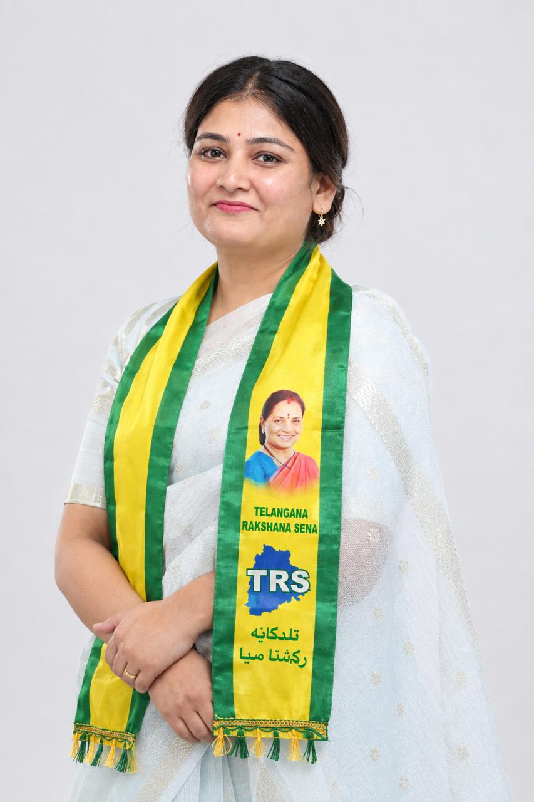
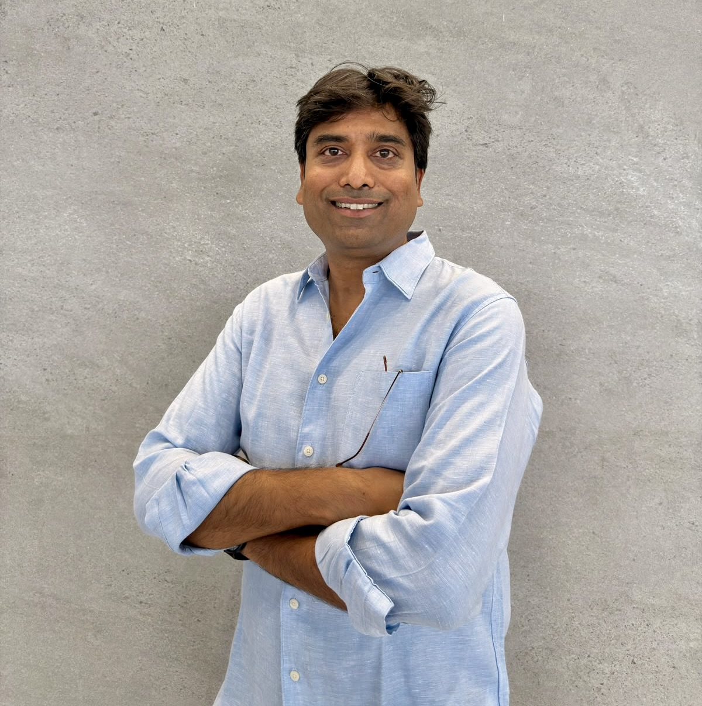

Leadership
Leadership
National Spokesperson and Director of the Office of Foreign Affairs; and the State President of the Trade & Commerce Wing, Telangana Rakshana Sena.

Surabhi
Entrepreneur | Political Strategist | Policy Architect | National Spokesperson, TRS | Director, Office of Foreign Affairs, TRS
Surabhi is an entrepreneur, political strategist and policy-oriented leader whose work spans business, diplomacy, international relations, foreign policy and institutional development. As the founder of multiple companies across diverse sectors, she has built a career around entrepreneurship, strategic leadership, employment generation and public engagement.
As the National Spokesperson of TRS and Director of its Office of Foreign Affairs, Surabhi brings together her experience in political communication, strategic planning and international engagement. Her work is informed by an interest in India's global standing, the role of diplomacy in advancing national interests and the importance of forward-looking policies in a rapidly changing world.
As the founder of numerous companies across different sectors, Surabhi has demonstrated a commitment to establishing and growing organisations, developing teams and creating sustainable business opportunities. Her entrepreneurial work encompasses business development, workforce expansion and employment generation, with a focus on connecting talent to opportunities and supporting the growth of India's workforce.
Through her companies and the Advance India initiative, she has contributed to placing over one lakh people in employment. Her approach to entrepreneurship is grounded in the belief that building successful businesses can create wider economic opportunities, support social mobility and contribute to national development.
Her vision extends beyond individual ventures to strengthening India's entrepreneurial and technological ecosystem. She advocates for greater investment in homegrown innovation, indigenous digital platforms and domestic technology capabilities. Through Advance India, she promotes the development of Indian alternatives in the digital economy, with a focus on data sovereignty, technological self-reliance and the creation of high-value employment.
As Director of the Office of Foreign Affairs, TRS, Surabhi is focused on developing a structured approach to international engagement and strengthening the foundations for meaningful diplomatic dialogue. Her vision is to build institutional relationships with international political representatives, organisations and stakeholders while exploring opportunities for economic, technological and cultural cooperation.
She views diplomacy as more than formal political interaction. In her approach, effective international relations involve a combination of strategic dialogue, economic partnerships, institutional cooperation and a clear understanding of geopolitical developments.
Her interests in foreign policy include strategic diplomacy, international economic cooperation, emerging technologies, digital sovereignty and India's evolving role in global affairs. She places particular importance on connecting foreign policy objectives with practical outcomes, including investment, knowledge exchange, innovation and employment.
Her vision for international affairs encompasses:
- Strategic diplomacy: Establishing structured channels for international dialogue and developing enduring relationships with political, economic and institutional stakeholders.
- Foreign policy formulation: Developing forward-looking policy frameworks that account for geopolitical developments, national priorities, economic interests and emerging international challenges.
- Economic diplomacy: Exploring opportunities for international trade, investment, entrepreneurship and business partnerships that can contribute to India's economic development.
- Technology and digital diplomacy: Encouraging international collaboration in emerging technologies while supporting India's digital sovereignty and domestic innovation.
- Institutional cooperation: Developing frameworks for engagement between Indian and international institutions, with clearly defined priorities and practical objectives.
- Global positioning: Encouraging greater participation in international discussions on technology, economic development, governance and strategic cooperation.
Surabhi believes that effective diplomacy requires strategic foresight, detailed policy understanding and the ability to translate international relationships into meaningful institutional and economic outcomes.
Policy development is a significant part of Surabhi's professional interests and leadership vision. She believes that sound policymaking requires an understanding of complex issues, careful consideration of available approaches and the ability to turn strategic ideas into workable institutional frameworks.
Her policy interests span foreign affairs, economic development, technology, employment generation and women's empowerment. She is particularly interested in how policies can address emerging challenges, strengthen institutional capacity and support long-term development.
Her approach to policy formulation emphasises research-informed thinking, clear strategic objectives, institutional accountability and effective implementation. She places importance on identifying the relationship between domestic priorities and international developments, especially in areas such as technology, economic diplomacy and geopolitical cooperation.
She sees policymaking as an ongoing process that requires collaboration across sectors, engagement with stakeholders and the ability to adapt to changing circumstances.
Surabhi has worked as a political strategist in the United States elections of 2012 and 2026, bringing an international dimension to her experience in political strategy and campaign-related work.
As the National Spokesperson of TRS, she participates in public communication and political discourse, articulating party positions and engaging with public affairs. Her role reflects an interest in communicating political perspectives, addressing issues of public importance and contributing to discussions on social and economic development.
Her experience in political strategy complements her broader work in policy and international relations. She recognises the importance of clear communication, strategic planning and effective engagement in helping institutions explain their objectives and connect with the public.
A central pillar of Surabhi's professional and public vision is her commitment to women's empowerment. She believes that women should have meaningful opportunities to participate in entrepreneurship, governance, politics, policymaking and international engagement.
Her vision goes beyond representation, emphasising women's involvement in leadership and decision-making. She considers financial independence, employment, entrepreneurship and access to leadership opportunities essential to expanding women's participation in economic and public life.
Through her business and public engagements, she seeks to encourage greater opportunities for women to lead organisations, influence policy and contribute to the development of their communities.
Through the Advance India initiative, Surabhi has championed a vision of national development focused on technological independence, employment generation, indigenous innovation and institution-building.
The initiative promotes the development of Indian digital platforms and technology infrastructure, with particular emphasis on data sovereignty and the growth of domestic capabilities.
Her vision includes encouraging an ecosystem in which Indian businesses can develop original technologies, compete in international markets and create employment opportunities for the country's growing workforce.
Surabhi's experience in entrepreneurship, political strategy and public affairs informs her interest in India's position in an increasingly interconnected world. She recognises that economic growth, technological development and international relations are closely linked.
Her international outlook is centred on constructive diplomacy, strategic cooperation and the development of lasting institutional relationships.
Her vision is to contribute to a globally engaged India that continues to strengthen its domestic capabilities while building productive relationships with the international community.
At the heart of Surabhi's work is a belief that leadership is defined by the ability to build institutions, develop people, formulate meaningful policies and create lasting opportunities.
She approaches leadership as a responsibility to think strategically, act with purpose and create pathways for others to participate in economic and public life. Her work brings together entrepreneurship, policy development, diplomacy and women's empowerment in pursuit of a broader vision of national progress.
Surabhi's overarching vision is to combine entrepreneurial leadership, strategic policymaking and effective international engagement to strengthen institutions, expand opportunities for women and young people, advance India's technological and economic capabilities, and contribute to India's growing role on the global stage.

Vijay Gariney
State President – Trade & Commerce Wing, Telangana Rakshana Sena (TRS)
As State President of the Trade & Commerce Wing of Telangana Rakshana Sena, Vijay focuses on strengthening the commercial ecosystem and representing the interests of businesses, entrepreneurs and traders.
His role also provides a natural platform for contributing to economic diplomacy and international commercial engagement, particularly in areas where Telangana can build stronger connections with global markets.
Global Trade
Promoting greater access for Telangana businesses to international markets and identifying opportunities for exports and global partnerships.
Foreign Investment
Encouraging international businesses and investors to explore Telangana as a destination for technology, innovation, manufacturing and services.
Technology Partnerships
Building international collaborations around technology, digital infrastructure, innovation and emerging industries.
Cross-Border Commerce
Understanding and addressing the opportunities and challenges created by increasingly interconnected financial and commercial ecosystems.
Business Diplomacy
Encouraging stronger business-to-business relationships between Telangana, India and international markets.
Telangana's Global Opportunity
Vijay believes Telangana's economic potential can be strengthened by connecting its entrepreneurial talent, technology ecosystem, human capital and commercial capabilities more effectively with global opportunities.
His perspective is centred on moving beyond traditional trade promotion toward a broader model of economic engagement, where governments, businesses, entrepreneurs, investors and international institutions can work together to create sustainable economic relationships.
This includes positioning Hyderabad and Telangana as stronger destinations for global technology, investment, innovation, entrepreneurship and international business.
Contribution to Foreign Affairs
Vijay's combination of entrepreneurial experience, technology expertise and trade leadership enables him to bring a business and economic perspective to foreign affairs discussions. His potential areas of contribution include:
- International trade and economic relations
- Foreign direct investment and investment promotion
- Technology and digital diplomacy
- Cross-border financial and commercial ecosystems
- International entrepreneurship and innovation
- Global business partnerships
- Market access for Telangana enterprises
- Economic opportunities arising from India's international relationships
- Strengthening Telangana's engagement with the global business community
Vision
"Connecting Telangana's entrepreneurial strength with the opportunities of the global economy."
Vijay's broader vision is to help create stronger bridges between Telangana and the world — through trade, technology, investment, entrepreneurship and people-to-people business relationships.